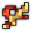
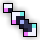
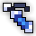
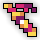
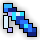
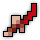
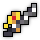
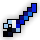

BiS Items & Swapouts:
Main Set:
   or
or
 -
-
 (any good dps ring)
(any good dps ring)
Swapouts:
    
Swapouts Explanation:
You use the sheaths for the DPS stats multipliers, that matters more than the actual damage the sheath does. So this means dashing over the boss while it is invulnerable is good, so you can stack stats.
BiS Enchants:
- : Overwhelming Strikes - Dexterity IV - Attack Tradeoff IV - Onshoot Attack IV
- : Flurry of Blows - Dexterity IV - Attack Tradeoff IV - Onshoot Attack IV
- : Pirate's Expertise - Attack Tradeoff IV - Mana Regen IV - Onability Dexterity IV
-

 : Pirate's Expertise - Attack Tradeoff IV - Onhit Attack IV
: Pirate's Expertise - Attack Tradeoff IV - Onhit Attack IV
-
 : Pirate's Expertise - Attack Tradeoff IV - Mana Regen IV - Onhit/Onability Dexterity
: Pirate's Expertise - Attack Tradeoff IV - Mana Regen IV - Onhit/Onability Dexterity
For Attack Tradeoff enchants, avoid getting -dexterity.